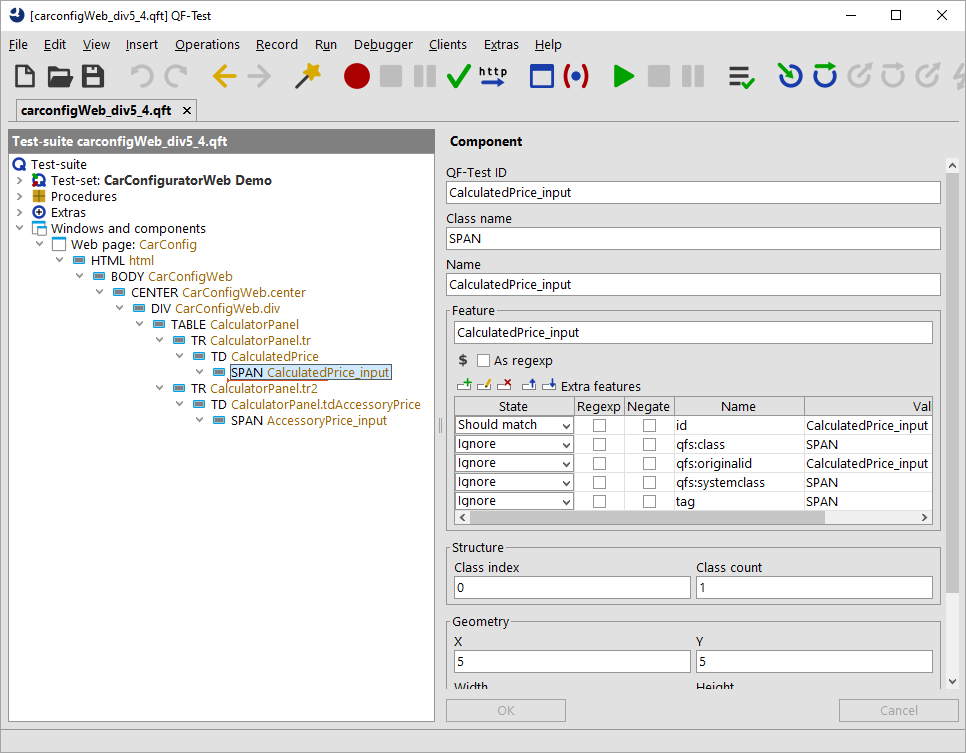
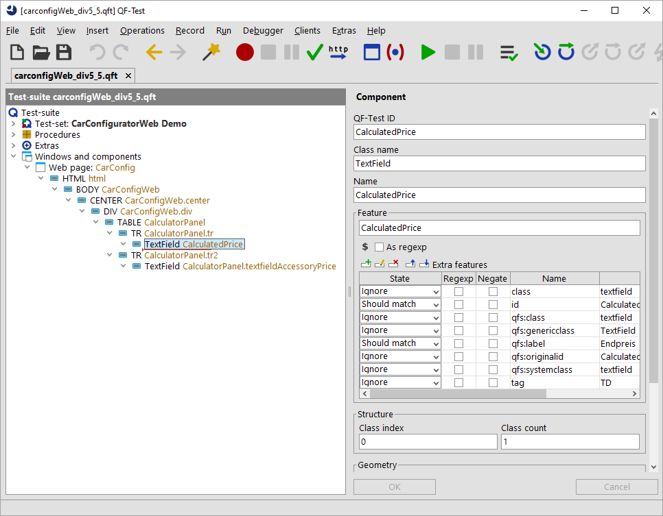

| Version 6.0.3 |
After the simple case in the previous section we will take a look at a more complex scenario now. Let's analyze how the textfields showing the selected price information are treated, e.g. the final price textfield. Like in the previous section we need to record some mouse clicks or text checks on those textfields. Then we need to navigate to the recorded components and analyze them. The figure below shows the current situation and our goal again.
|
|
|
||||||
|
| Figure 47.10: Simplification due to advanced class mapping | ||||||
We got some SPAN nodes recorded. Here we have no
class attribute, but an
id attribute assigned. So, we can
conclude that the id is very
specific to the particular field.
When you select its parent component, which
is a TD node, you will find a
class attribute with the value textfield,
which corresponds to the actual component class. When you select
that component QF-Test also highlights the entire textfield on the web-page.
So we can assume that a component with the value textfield
for the class attribute represents a textfield from a business perspective.
|
|  | ||
|
| Figure 47.11: Recording of SPAN textfields | ||
So, now let's extend the parameters of our procedure call of
qfs.web.ajax.installCustomWebResolver.
We need to map the textfield value as generic class
TextField.
Therefore, we extend the parameter genericClasses to
textfield=TextField,button=Button. As you can see the
genericClasses parameter holds a comma-separated
list.
When you delete the
previously recorded component, re-run the procedure
qfs.web.ajax.installCustomWebResolver,
reload the web page and re-record the
component you will get the following recording:
|
|  | ||
|
| Figure 47.12: Recording TextFields in WebCarConfigurator | ||
The textfields will be recorded as expected and we even get rid of one level in the
component hierarchy. In addition, the textfields have QF-Test specific attributes
like the extra feature qfs:label assigned.
Note
This example uses the parameter genericClasses like the previous one.
You can edit the values of the parameter using the 'Edit row' button of the table and
insert line-breaks after every comma to increase readability.
The next section show a translation for components which contain data and how to access that data afterwards. Such components represent data-tables, trees or lists and are handled as complex components by QF-Test.
| Last update: 9/6/2022 Copyright © 1999-2022 Quality First Software GmbH |